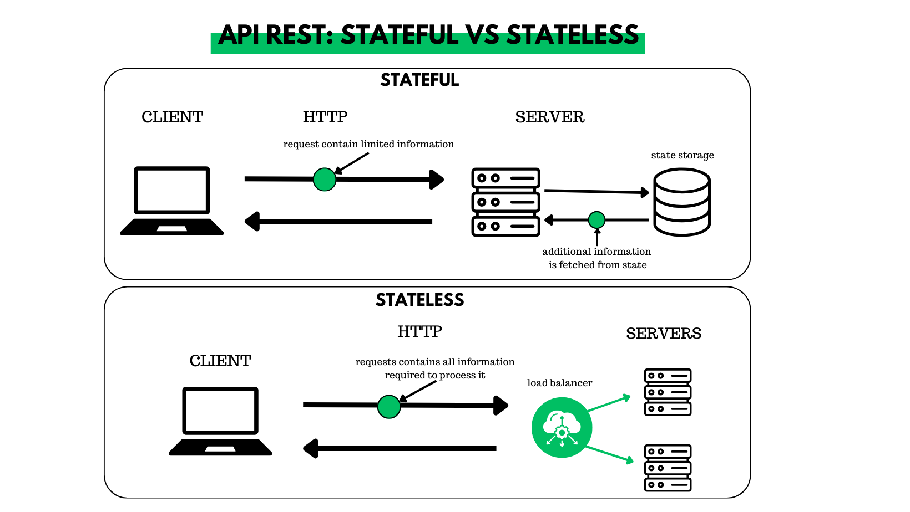
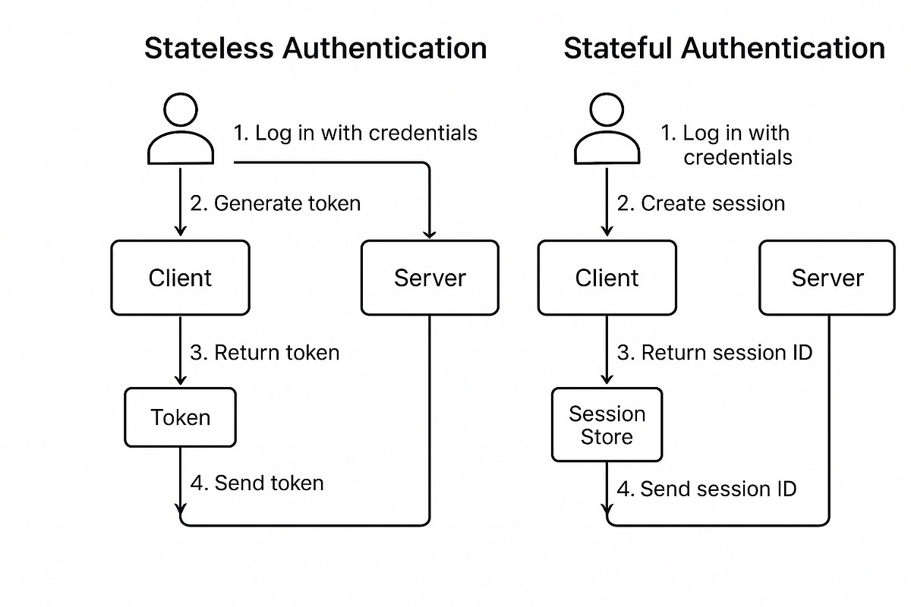
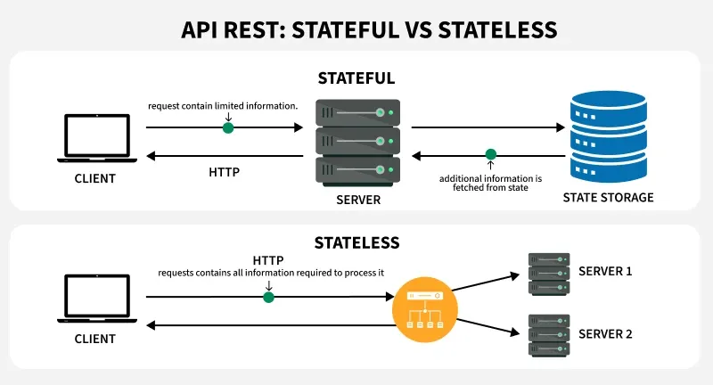
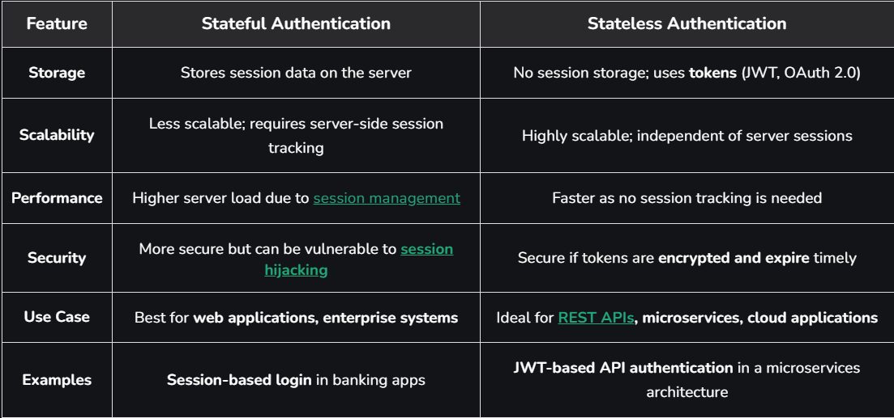

System Design Mastery
Master scalable systems with premium insights
🧠 Stateless vs Stateful Architecture - No Memory vs Session Memory
🔹 STATELESS ARCHITECTURE
1️⃣ What is it?
A Stateless system does NOT store client session data on the server. So, every request is independent and the server does not remember anything about previous requests.
How it works:
Client sends all required data in every request:
- 🔐 Authentication token
- 🧾 Session info / request context
Server processes the request and forgets.

📊 Stateless: each request contains everything the server needs
2️⃣ Why does it exist? (What problem does it solve?)
Stateless architecture solves:
- 📈 Scalability problems
- ⚖️ Load balancing challenges
- 🛡️ Fault tolerance issues
👉 Any server can handle any request. No dependency on previous state.
3️⃣ What breaks without it?
If a system is not stateless:
- 📉 Hard to scale horizontally
- 🚦 Hard to distribute traffic
4️⃣ Real-world analogy
Stateless = ATM Machine 🏧
- Insert card
- Enter PIN
- Complete transaction
- ATM forgets you
- Next time, you must insert card again
5️⃣ When to use / When NOT to use
✅ Use Stateless:
- REST APIs
Examples:
- API servers
- Payment APIs
❌ Not ideal when:
- Real-time gaming
- Live collaborative apps
6️⃣ One common mistake
🚨 Thinking stateless means no database.
Stateless means the server doesn’t store session in memory. Data can still be stored in a database or cache.
7️⃣ Real app connection
🛒 E-commerce
- Product API is stateless
- Each request contains token
- Any server can respond
🔍 Real Website Example
When you login to Instagram, PayPal, or Amazon, most modern systems use stateless JWT-based authentication. Server does not remember you — it just verifies the token each time.

📊 Stateless JWT-based authentication: server verifies token per request
🔹 STATEFUL ARCHITECTURE
1️⃣ What is it?
A Stateful system stores client session data on the server. The server remembers the user’s session, current state, and previous interactions.
How it works:
- 1️⃣ Client logs in
- 2️⃣ Server creates session
- 3️⃣ Server stores session in memory
- 4️⃣ Client sends session ID next time
Server remembers the user.

📊 Stateful: session state stored on the server
2️⃣ Why does it exist? (What problem does it solve?)
Stateful systems help when:
- 🔌 Continuous connection is required
- ⚡ Real-time interactions
- 🧾 Maintaining session data
5️⃣ When to use / When NOT to use
✅ Use Stateful:
- Online gaming
- WebSockets
- Chat systems
- Real-time trading
❌ Avoid Stateful:
- Large-scale APIs
- High-traffic public services
- Microservices architecture
Hard to scale and hard to load balance.
6️⃣ One common mistake
🚨 Storing session in server memory.
If server crashes: session is lost and user is logged out. Better options: store session in Redis, or use stateless JWT.
7️⃣ 📱 WhatsApp Example
When you open WhatsApp:
- Your phone connects to WhatsApp server
- A persistent connection is created (WebSocket)
- Server knows you are online, which chat is opened, typing status, and connection session
If connection breaks: session ends and you appear offline.
👉 This is Stateful because the server is maintaining your session state.
🧠 Direct Comparison

📊 Visual comparison: Stateless vs Stateful
🎯 Interview-ready one-liner
Stateless systems do not store client session data on the server, enabling easy scalability and load balancing, while stateful systems maintain session state, making them suitable for real-time and persistent interactions.
Stateless: Client → Any server → Done
Stateful: Client → Same server (session stored)
If server stores your login session in memory → Stateful
If client stores token and server just verifies it → Stateless